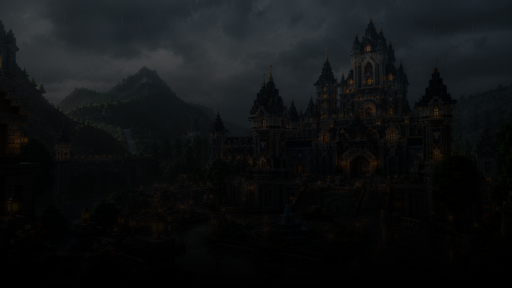
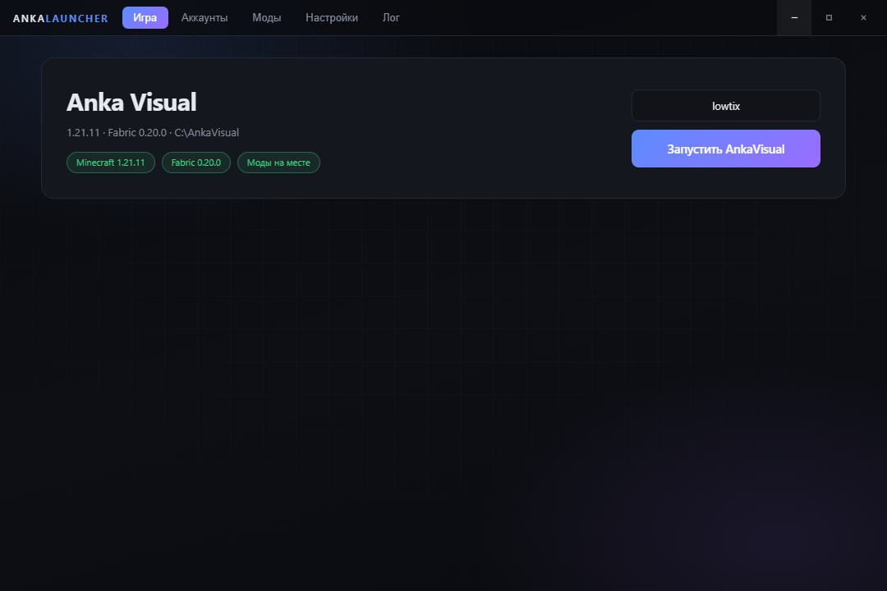

Minecraft 1.21.11 · Fabric
Один .exe без установки: скачал, запустил — лаунчер сам развернёт игру и клиент. Доступ по ключу, аккаунт на сайте — для профиля и связи.
Стек

Всё это настраивается
Меню, панели и иконки живут в конфигах клиента. Лаунчер ставит игру и клиент сам, переключаешь — и в игре всё меняется сразу, без перезахода.
Лаунчер сам скачает игру, загрузчик и клиент, разложит всё по папке и запустит первый мир.
Клиент 1.5.1 обновляется лаунчером автоматически.
Лаунчер 1.0.0 · 129 МБ · SHA-256 275FB8AE…B3AF1